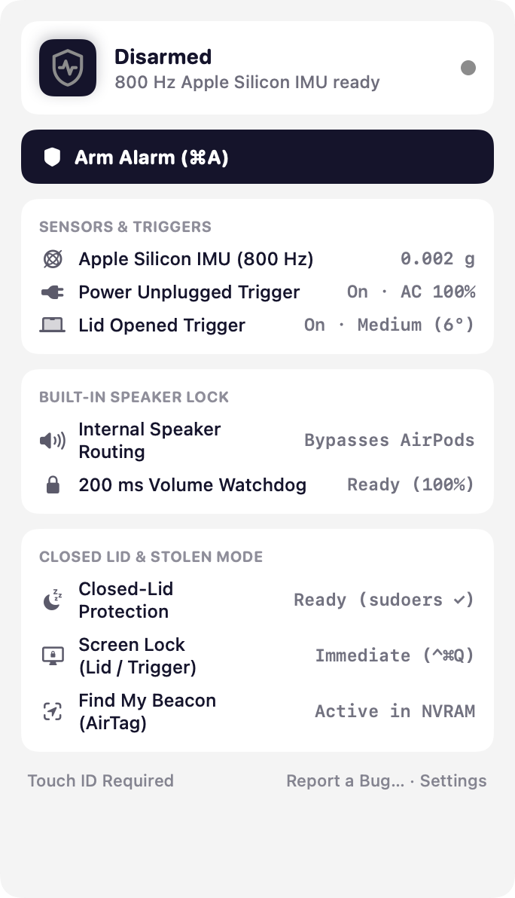
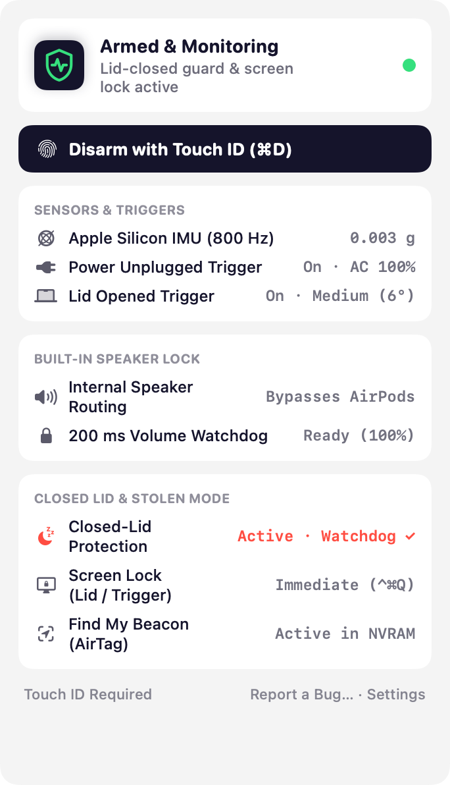
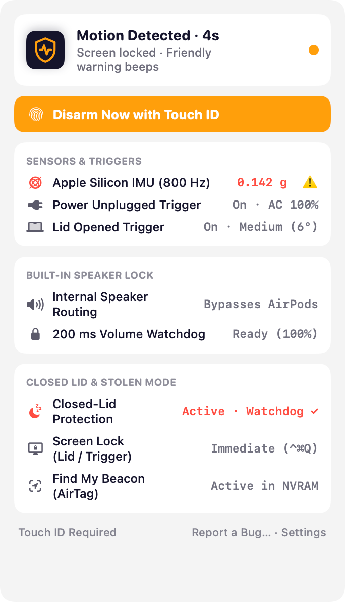
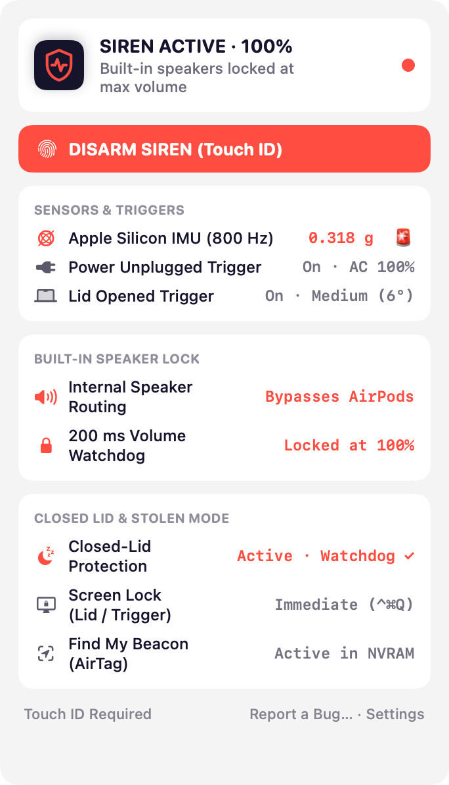

A free anti-theft menu bar app for macOS
Touch my MacBook.
Everybody hears it.
Tjuv taps your MacBook's 800 Hz Apple Silicon motion sensor, locks the screen, and blasts a 100% siren through the built-in speakers—even with AirPods connected or the lid closed.
brew install --cask mj0lken/tap/tjuv




-
1 / 6
Arm in one click (or ⌘A)
Walking away for coffee? Click the shield in your menu bar. After a short arming delay, your MacBook is on guard.
-
2 / 6
800 Hz Apple Silicon IMU
Tjuv reads
AppleSPUHIDDevicedirectly at 800 Hz. Lift, tilt (3°–12°), unplug MagSafe, or crack open the lid and it trips immediately.- Armed
- Countdown
- 100% Siren
-
3 / 6
Polite countdown first
Bumped your own table? Gentle countdown beeps and a floating HUD give you 3–10 seconds to disarm with Touch ID before the siren blares.
-
4 / 6
Built-in speakers only, locked at 100%
AirPods or a monitor plugged in? Tjuv forces CoreAudio directly to the internal MacBook speakers and re-asserts 100% unmuted volume every 200 ms. Mute keys do nothing.
-
5 / 6
Close the lid. Screen locks, guard stays on.
Closed-lid mode keeps the Mac awake while armed, locks your macOS session the instant the lid shuts or a trigger trips, and restores normal sleep when you disarm.
-
6 / 6
AirTag beacon & Touch ID disarm
Verifies that macOS Find My (Apple's native P-224 AirTag beacon) is active in NVRAM, and requires your fingerprint to disarm the siren.
How it guards
Hardware sensors, zero cloud
Tjuv talks straight to Apple Silicon hardware interfaces—IOKit HID, CoreAudio HAL, IOKit Power Management and LocalAuthentication—with no background daemon and no telemetry.
- High sensitivity 0.04 g acceleration or 3° tilt
- Medium (default) 0.08 g acceleration or 6° tilt
- Low sensitivity 0.16 g acceleration or 12° tilt
Physical & System Triggers Active when armed
- 800 Hz 3-Axis MEMS Accelerometer
- 3D Vector Tilt Detection
- MagSafe / USB-C Power Unplugged
- Clamshell Lid Opened
- System / Display Wake
- 8% Battery Hardware Guard
Audio Countermeasures Always enforced
- Direct Built-In Speaker Binding
- AirPods & Bluetooth Bypass
- 100% Volume + Unmute Lock (200 ms)
- 700–1500 Hz Harmonic Siren
Even if a thief plugs in headphones or mashes the Mute key, the siren stays on the internal speakers at full volume.
Authentication & Recovery Built in
- Touch ID / Passcode Disarm
- Immediate Screen Lock (⌃⌘Q)
- Find My NVRAM Beacon Check
- Floating Lock-Screen HUD
Locks your desktop session on trigger or lid close so a thief never gets an unlocked Mac.
Closed lid & AirTag mode
Built for the coffee shop table—and the getaway bag
Closing the lid normally puts a MacBook to sleep and silences everything. Tjuv uses the same hardened, watchdog-backed pmset architecture as thumbs-out, paired with macOS Find My.
- One password, one visudo-checked rule. Setup allows only
pmset -a disablesleep 0and1in/etc/sudoers.d/tjuv, nothing else. - Dead-man's switch watchdog. Flipping lid sleep off stays strictly tied to Tjuv's process. Disarm, quit, hit low battery, or crash, and normal sleep comes right back.
- Immediate session lock. Closing the lid while armed—or tripping any theft sensor—locks your macOS session via
SACLockScreenImmediatewhile the siren keeps blasting. - Native Apple AirTag beacon check. Apple Silicon Macs broadcast rotating P-224 Offline Finding BLE beacons when Find My Mac is enabled. Tjuv checks NVRAM (
fmm-mobileme-token-FMM) and warns you if it's off.
Arm your Mac.
Homebrew
brew install --cask mj0lken/tap/tjuv
Download
Download the latest releaseWill it run on my Mac?
Checks your chip and macOS version right here in the browser. Nothing is sent anywhere.
To be sure, run this in Terminal. It should print 15 or higher, then arm64.
sw_vers -productVersion; uname -m
- The app isn't notarized by Apple yet, so the first launch is blocked. Click Done.
- Open System Settings › Privacy & Security and click Open Anyway.
- Click the shield in your menu bar to test the 1.5-second siren, set up closed-lid mode, and arm your MacBook.